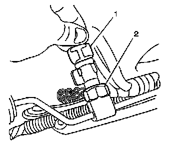

Refrigerant Pressure Sensor / Switch: Service and Repair
Air Conditioning (A/C) Refrigerant Pressure Sensor Replacement
Tools required
J 39400-A Halogen Leak Detector
Removal Procedure

Important: There is no Schrader valve under the pressure sensor.
1. Recover the refrigerant. Refer to Refrigerant Recovery and Recharging (Refrigerant Recovery and Recharging) .
2. Raise and support the vehicle. Refer to Lifting and Jacking the Vehicle (Service and Repair) .
3. Remove the front air deflector retainers.
4. Remove the front air deflector.

5. Disconnect the electrical connector (1) from the A/C refrigerant pressure sensor (2).
6. Remove the A/C refrigerant pressure sensor.
Installation Procedure
1. Install a new O-ring to the refrigerant pressure sensor. Refer to O-Ring Replacement (Service and Repair) .
Notice: Refer to Fastener Notice (Fastener Notice) .
2. Install the A/C refrigerant pressure sensor (2).
Tighten the sensor to 9.8 N.m (87 lb in).
3. Connect the electrical connector (1) to the A/C refrigerant pressure sensor.
4. Install the front air deflector.
5. Install the front air deflector retainers.
6. Lower the vehicle.
7. Evacuate and recharge the A/C system. Refer to Refrigerant Recovery and Recharging (Refrigerant Recovery and Recharging) .
8. Leak test the fittings of the component using J 39400-A .